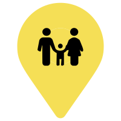

<button id="checkboxes-icon"  *ngIf="!showCheckboxes; else elseBlock"

mat-mini-fab color="accent" 
aria-label="Example icon button with a bookmark icon"
matBadgeColor="warn"
(click)="toggleCheckboxes()"
>
    <mat-icon>filter_list</mat-icon>
  </button>

  <ng-template #elseBlock>
    <div class="checkboxes-container">
     <div class="close-button-container"
     fxLayout="row" fxLayoutAlign="space-between center"
     >
     <p>Filter/Key</p>
       <button
       mat-button
       (click)="toggleCheckboxes()">X</button>
     </div>
   
     <section class="example-section">
        Music <mat-checkbox color="primary" (click)="toggleCategory('music-marker', music)" class="example-margin" [(ngModel)]="music"></mat-checkbox>
        Sports <mat-checkbox color="primary" class="example-margin" [(ngModel)]="sports"></mat-checkbox>
        Theatre <mat-checkbox color="primary" class="example-margin" [(ngModel)]="arts"></mat-checkbox>
      </section>
      <section class="example-section">
        Family <mat-checkbox color="primary" class="example-margin" [(ngModel)]="family"></mat-checkbox>
        Film <mat-checkbox color="primary" class="example-margin" [(ngModel)]="film"></mat-checkbox>
        Misc. <mat-checkbox color="primary" class="example-margin" 
        [(ngModel)]="misc"
        (click)="toggleCategory('misc-marker', misc)"
        ></mat-checkbox>
      </section>
   </div> 
   </ng-template>
